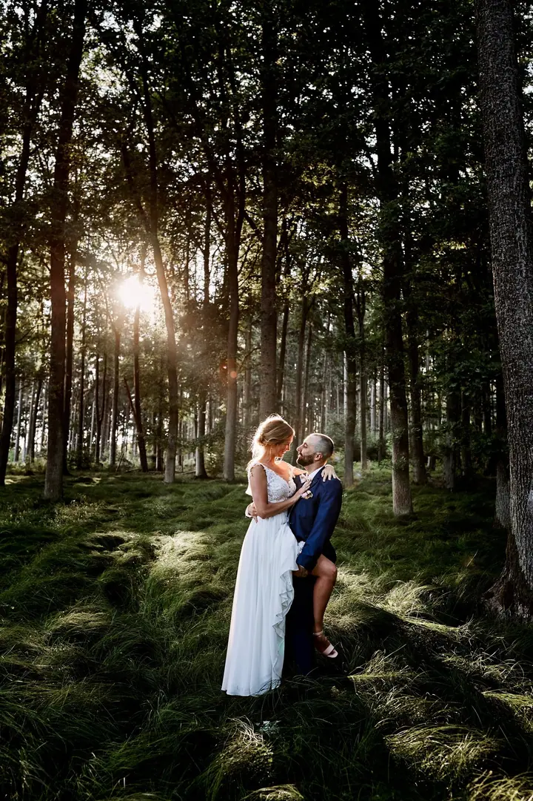
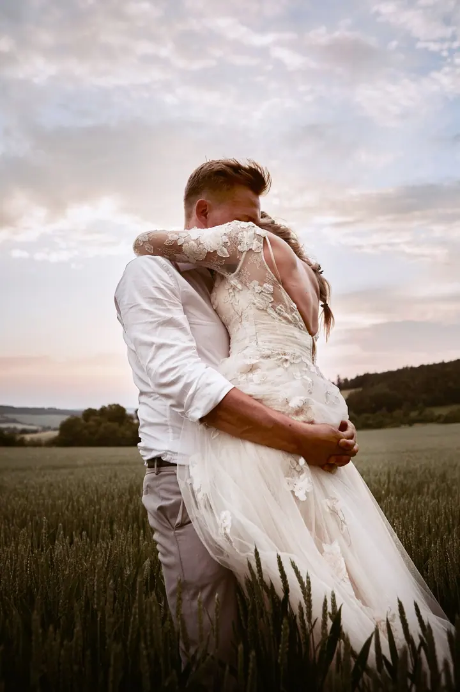
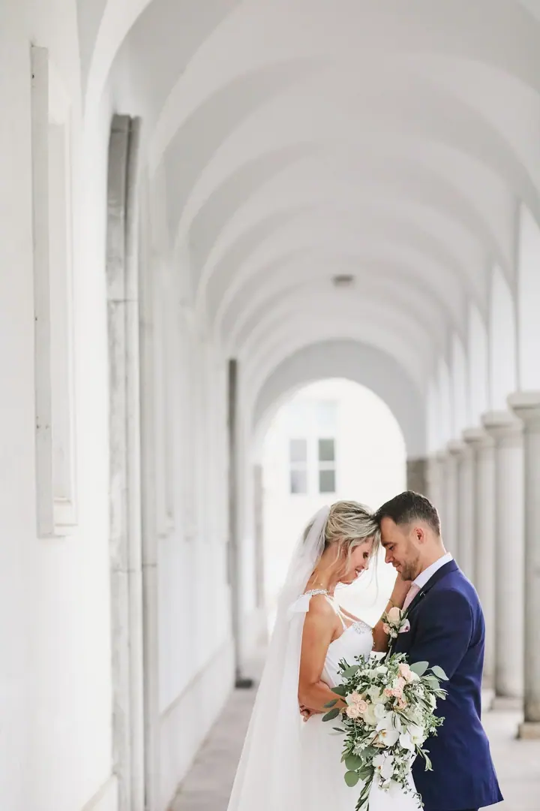
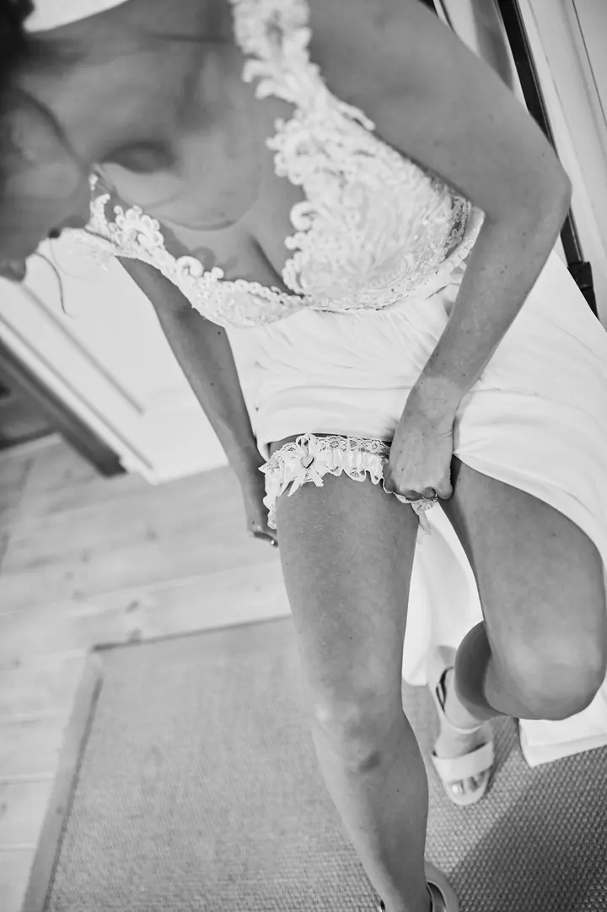
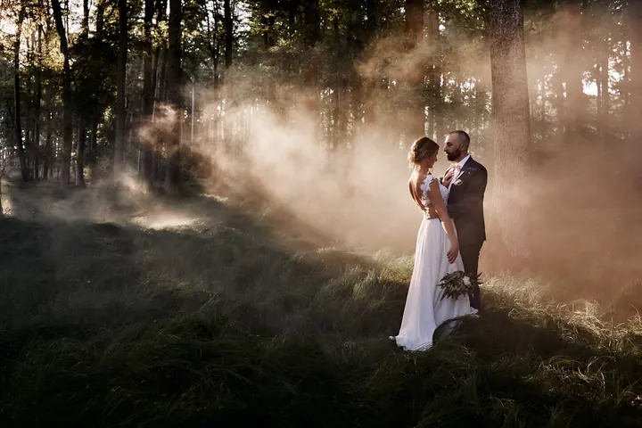

jedna
Svatby
Svatby fotím přirozeně, bez póz a bez stresu, i když před objektivem stojíte poprvé. Vybrat si můžete svatební půlden, svatební den nebo celý svatební den od příprav po večerní zábavu.

Svatební fotograf ze Šumavy · Šumava, Plzeň, Klatovy

Jmenuji se Zdeněk Hás a jsem svatební fotograf ze Šumavy. Vyrostl jsem mezi lesy, loukami a jezery a právě tam vznikají fotky, které mám nejraději. Svatbu s vámi rád naplánuji tak, abyste si ji užili naplno a nemuseli řešit foťák.
Více o mně
Co fotím
jedna
Svatby fotím přirozeně, bez póz a bez stresu, i když před objektivem stojíte poprvé. Vybrat si můžete svatební půlden, svatební den nebo celý svatební den od příprav po večerní zábavu.
dvě
Společné focení pro dva, nejraději na louce, v lese nebo u jezera. Hlavní je klidná atmosféra a krásné světlo.
Fotím i rodiny, protože společné chvíle si zaslouží zůstat na fotkách. Nejlépe venku v přírodě a bez spěchu.
Portréty pro firmy a jejich lidi. Termín a místo spolu domluvíme podle toho, co potřebujete.
Nejkrásnější fotky vznikají na louce, v lese nebo u jezera.


Za objektivem
Jsem svatební fotograf ze Šumavy, táta srdcem i duší a taky kluk, který miluje přírodu, opravdové emoce a krásné světlo. Největší motivací je pro mě moje malá dcera. Inspiraci hledám v lesích, na loukách a u jezer, kde často vznikají ty nejpřirozenější fotky.
Focení beru jako společný příběh. Chci, abyste si svůj den užili naplno a já byl u toho tak nenápadně, aby fotky ukázaly to, co jste opravdu prožili. Nemusíte vědět, jak pózovat. S každým momentem vám pomůžu, ať fotíme radost, smích nebo klidné chvíle mezi tím.
Svatební den s vámi rád naplánuji tak, aby vyhovoval světlu, emocím i vašemu pohodlí. Na svoji cestu jsem hrdý, stejně jako na Šumavu a na každou svatbu, kterou můžu fotit v Plzni, v Klatovech a po celých západních a jižních Čechách.
Zdeněk
Napište mi něco o sobě a o tom, jak si svatbu nebo místo představujete. Rád vám pošlu nezávaznou nabídku.
Probereme spolu program dne, klidně přes videohovor. Den naplánujeme tak, aby vyhovoval světlu, emocím i vašemu pohodlí.
Den plyne přirozeně a já jsem u toho nenápadně. Skupinové fotky nafotíme rychle, aby hosté nemuseli dlouho čekat, a portréty pak v klidu ve večerním světle.
Fotky dostanete plně upravené a retušované v digitální podobě. Najdete je v online galerii.
Portfolio
Otázky
Svatební půlden trvá zhruba 5 hodin a má 200+ upravených fotek. Svatební den trvá 8 až 10 hodin a má 300+ fotek. Celý svatební den trvá nejvýš 12 hodin a má 400+ fotek. Počty fotek jsou jen orientační, záleží hlavně na programu a počtu hostů.
To vůbec nevadí. Fotím přirozeně a bez póz. Pomůžu vám s každým momentem, i když před objektivem stojíte poprvé.
Ano, každá hodina navíc stojí 1 800 Kč. Balíček vám taky můžu sestavit na míru, nebo připravit dárkový poukaz jako dar novomanželům.
Ano. Svatební portréty a přípravy můžeme nafotit v klidu den předem, bez shonu a nervů. Pro portréty po obřadu vám umím zajistit i vizážistku, jen je potřeba ji rezervovat včas.
Napište pár vět o tom, co si představujete. · +420 604 874 189